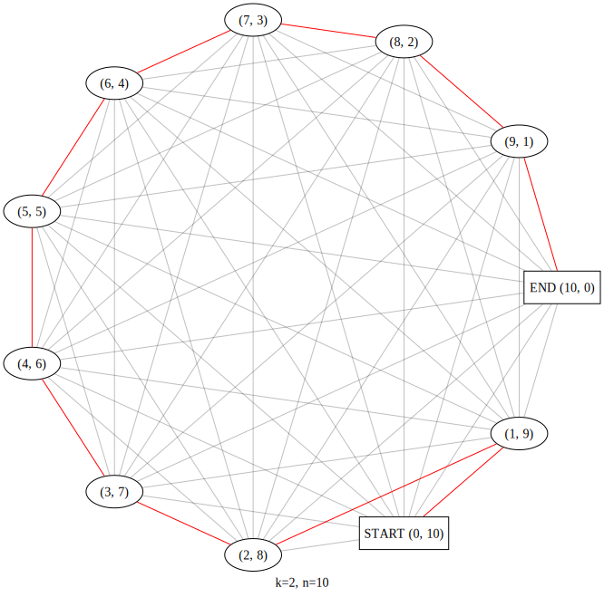

Say that you want to generate a regex of the form
a*b*The following describes valid strings of this type: i, j ≥ 0, aibj
e.g. a3b0 = aaa
Next, another constraint: only generate strings of length l. That is, i + j = l
which is a convolution. I will write a convolution of k integers that sum to l as Convl, k. This represents the set of all solutions as k tuples.
For now I’ll just consider 2-convolutions, i.e. Convl, 2. It’s definition is: Convl, 2 = {(a,b)|a, b ≥ 0, a + b = l}
So to generate a*b* of a fixed length l, one option is to traverse all the
2-convolutions and generate the string from it, something like
strings = [ "a"*i + "b"*j + "c"*k for i,j,k in convolutions2(l) ]A “traditional” implementation of convolutions2 would
be:
def convolutions2(l):
results = []
for i in range(0,l+1):
results.append((i,l-i))
return resultsAll well and good; but I have a qualm with this. I want the convolutions in an order such that each adjacent convolution differs as little as possible. This algorithm doesn’t exactly convince me that this is the best order for that purpose. But this is skipping ahead; first, “differs” needs defined.
Hamming distance is appropriate for this. Given two 2-convolutions, the distance is: H(a,b) = |a0−b0| + |a1−b1|
def conv_dist(a, b):
return sum(map(abs, map(lambda t: t[0]-t[1], zip(a,b))))This would represent the number of edits necessary to make the two strings equal.
The naive approach is to check all path permutations and select whichever has the smallest distance sum. If V = Convl, k this would require |V|! iterations which is not feasible for large |V|. A better idea: since we’re dealing with adjacency and paths, what about a graph representation?
To represent the problem as a graph, each 2-convolution is represented by a node. The graph is complete: every node has an edge to every other node. The weight of an edge is the hamming distance between the two nodes.
The objective then is to find the graph traversal that results in the minimum edge weight sum. Intuitively, since the graph is complete, the optimal move from one node n to another is the edge with the smallest distance.
While the above explains how to select the next node, what about the initial node? My initial choice is (0,l). Why?
First, what would a minimum edit look like? For a 2-convolution, any of {(+1,−1), (−1,+1)}. These two clearly preserve the sum, i.e. a + b = (a+1) + (b−1) = (a−1) + (b+1) = l. (0,0) is the other solution that preserves the sum but obviously performs no transition. N.B. there are some exceptions w.r.t bounds.
With this in mind, starting at (0,l) would leave no choice but (1,l−1). Since a node is only visited once, the next minimum change leads to (2,l−2) and so on. Eventually this leads to (l,0) covering all convolutions.
Putting everything together, here’s the graph traversal in Python:
def minimum_conv2_path(n) -> List[Tuple[int]]:
conv = convolutions2(n)
curr_node = (0,n)
visited = set([curr_node])
path = [curr_node]
while True:
neighbor_nodes = [ n for n in conv if n not in visited ]
if neighbor_nodes == []:
break
curr_node = min(neighbor_nodes, key=lambda n: conv_dist(curr_node,n))
path.append(curr_node)
visited.add(curr_node)
return path
It’s true that this method and the “traditional” method defined above seem to have the same output. See:
>>> for vt, vs in zip(conv.convolutions2(10), conv.minimum_conv2_path(10)):
... print(vt, vs)
...
(0, 10) (0, 10)
(1, 9) (1, 9)
(2, 8) (2, 8)
(3, 7) (3, 7)
(4, 6) (4, 6)
(5, 5) (5, 5)
(6, 4) (6, 4)
(7, 3) (7, 3)
(8, 2) (8, 2)
(9, 1) (9, 1)
(10, 0) (10, 0)As for the edit distance, it’s always 2 as predicted:
>>> for n, np in zip(c, c[1:]):
... print(f'{n}->{np} dist: {conv.conv_dist(n,np)}')
...
(0, 10)->(1, 9) dist: 2
(1, 9)->(2, 8) dist: 2
(2, 8)->(3, 7) dist: 2
(3, 7)->(4, 6) dist: 2
(4, 6)->(5, 5) dist: 2
(5, 5)->(6, 4) dist: 2
(6, 4)->(7, 3) dist: 2
(7, 3)->(8, 2) dist: 2
(8, 2)->(9, 1) dist: 2
(9, 1)->(10, 0) dist: 2And finally, the generated strings:
>>> for i,j in conv.minimum_conv2_path(10):
... print("a"*i + "b"*j)
...
bbbbbbbbbb
abbbbbbbbb
aabbbbbbbb
aaabbbbbbb
aaaabbbbbb
aaaaabbbbb
aaaaaabbbb
aaaaaaabbb
aaaaaaaabb
aaaaaaaaab
aaaaaaaaaaConcretely it seems to work for 2-convolutions… but will it work for k-convolutions where k > 2? Some questions: